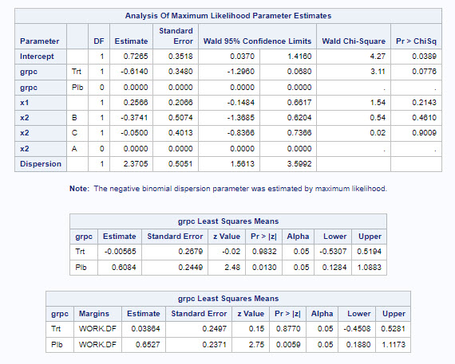

Comparison of implementations and results between SAS vs R for negative binomial regression for count data.
Scope
Methodologies
Negative binomial regression
Technical implementations
SAS: PROC GENMOD with option: DIST = NB or DIST = NEGBIN
R: MASS::glm.nb
Findings
Below are summary of findings from a numerical comparison using dummy data, where possible we specify the same algorithm in R and SAS (see section Numerical Comparisons for details).
Negative binomial regression
Exact match (at 0.001 level) can be obtained using glm.nb in R vs PROC GENMOD procedure in SAS, for parameter and lsmeans estimates, confidence intervals and p-values after manually adjusting the estimated variance-covariance matrix in R. For the dispersion parameter the MLEs also match, however discrepancies in the confidence intervals are observed.
In the following sections the implementations will be compared in tabular fashion followed by a numerical comparison using dummy data.
Comparison of key features of SAS and R implementations
The following set of tables compare the two implementations and which options need to be adjusted in R to obtain matching results if necessary. The following aspects are compared:
Parameterization of the negative binomial distribution
SAS and R use different parameterizations of the negative binomial
SAS and R use different likelihood optimization algorithms
There are differences in the estimation of the variance-covariance matrix, in particular the covariance between dispersion/scale parameter and model coefficients. It is however possible to obtain the SAS variance-covariance matrix in R.
Convergence criteria are not generally identical in SAS and R.
CI estimation methods are by default not identical but by using alternative confint function in R SAS method can be reproduced
Methods for hypothesis testing for model coefficients are equivalent in SAS and R.
Least-square or marginal means are not directly available in R but equivalent estimation as in SAS is possible with additional packages
Table 1: Negative binomial regression in SAS vs R
Attribute
SAS PROC GENMOD
R MASS::glm.nb
Note
Negative binomial parameterization
Variance of the negative binomial is given by \(\mu + k\mu^2\) and the dispersion parameter k is estimated. Overdispersion increases as k goes to infinity.
Variance of the negative binomial is given by \(\mu + \frac{\mu^2}{\theta}\) and the scale parameter theta is estimated. Overdispersion increases as theta goes to zero.
\(k=\frac{1}{\theta}\)
Likelihood optimization algorithm
Ridge-stabilized Newton-Raphson algorithm
Iteratively reweighted least squares (IWLS)
It seems SAS performs simultaneous optimization on all parameters (i.e. including dispersion). R uses an alternating process, where glm coefficients are fitted given a fixed theta and then theta is estimated given fixed coefficients until convergence.
Estimation of variance-covariance matrix
Observed (rather than expected) fisher information is used for calculation of standard errors of coefficients, which allows for non-zero covariance between coefficients and dispersion parameter.
Expected fisher information is used for calculation of standard errors of coefficients, so covariance between coefficients and dispersion parameter is zero (which is asymptotically correct). However identical vcov matrix as in SAS can be obtained “post-hoc”.
As shown in the numerical example below in R the variance-covariance matrix corresponding to the PROC GENMOD estimation can be obtained based on the outputs from MASS::glm.nb with the glm.nb.cov function. The “correct” standard errors, confidence intervals and p-values can then be manually calculated based on the new covariance matrix.
Convergence criteria
The iterations are considered to have converged when the maximum change in the parameter estimates between iteration steps is less than the value specified in CONVERGE option (default: CONVERGENCE = 1E-4)
Based on relative difference between deviance, specified through epsilon argument in glm.control (default: epsilon = 1e-8).
PROC GENMOD also checks for relative Hessian convergence and throws a warning if this is larger than the value provided in the CONVH option (default: CONVH = 1E-4 ).
Confidence interval (CI) estimation method
By default asymptotic Wald CIs are estimated. Profile likelihood CI is estimated if option LRCI is provided.
confint function will estimate profile likelihood CIs, Wald CIs can be obtained by using confint.default
Note that by default confidence intervals can differ even if same method is used if vcov matrix in R is not adjusted as explained above.
Hypothesis tests for regression coefficients
Asymptotic Wald test
Asymptotic Wald test
PROC GENMOD reports Wald Chi-square statistic, while MASS::glm.nb reports the Z statistic, however the p-values are equivalent. Note that by default test results will differ if vcov matrix in R is not adjusted as explained above.
Estimation of least-square/marginal means
Calculation through lsmeans statement assumes that for classification effects the groups are balanced. OM option can be provided to obtain lsmeans that are using the observed proportions in the data
Not implemented as part of MASS::glm.nb but can be obtained using emmeans package.
In R marginal means can be obtained using the emmeans::emmeans function, setting argument weights = "equal" corresponds to the default option in SAS, while weights = "proportional" gives the means proportional to observed data
Numerical Comparison
SAS PROC GENMOD procedure
R MASS::glm.nb
A dummy dataset is first generated, and negative binomial regression is applied to the dummy dataset for demonstration purposes. Every effort is made to ensure that the R code employs estimation methods/ optimization algorithms/ other components that closely match (as much as possible) those used in the SAS code. This is done to facilitate a comparison of estimates, 95% confidence intervals (CIs), and p-values between the two implementations.
Prerequisites: R packages
In order to run these analyses we need to load a few packages.
library(MASS)library(dplyr)
Attaching package: 'dplyr'
The following object is masked from 'package:MASS':
select
The following objects are masked from 'package:stats':
filter, lag
The following objects are masked from 'package:base':
intersect, setdiff, setequal, union
library(emmeans)
Welcome to emmeans.
Caution: You lose important information if you filter this package's results.
See '? untidy'
We also define the glm_nb_cov function to obtain the SAS variance-covariance matrix in R from here.
## Helper function to compute the variance from negative binomial regression## This matches with variance estimated from SASglm_nb_cov <-function(mod) {# given a model fitted by glm.nb in MASS, this function returns a variance covariance matrix for the# regression coefficients and dispersion parameter, without assuming independence between these# note that the model must have been fitted with x=TRUE argument so that design matrix is available# formulae based on p23-p24 of# http://pointer.esalq.usp.br/departamentos/lce/arquivos/aulas/2011/LCE5868/OverdispersionBook.pdf# and http://www.math.mcgill.ca/~dstephens/523/Papers/Lawless-1987-CJS.pdf# lintr: off# please rm -- variable not used!# k <- mod$theta# lintr: on# p is number of regression coefficients p <-dim(vcov(mod))[1]# construct observed information matrix obsInfo <-array(0, dim =c(p +1, p +1))# first calculate top left part for regression coefficientsfor (i in1:p) {for (j in1:p) { obsInfo[i, j] <-sum((1+ mod$y / mod$theta) * mod$fitted.values * mod$x[, i] * mod$x[, j] / (1+ mod$fitted.values / mod$theta)^2) } }# information for dispersion parameter obsInfo[(p +1), (p +1)] <--sum(trigamma(mod$theta + mod$y) -trigamma(mod$theta) -1/ (mod$fitted.values + mod$theta) + (mod$theta + mod$y) / (mod$theta + mod$fitted.values)^2-1/ (mod$fitted.values + mod$theta) +1/ mod$theta)# covariance between regression coefficients and dispersionfor (i in1:p) { obsInfo[(p +1), i] <--sum(((mod$y - mod$fitted.values) * mod$fitted.values / ((mod$theta + mod$fitted.values)^2)) * mod$x[, i]) obsInfo[i, (p +1)] <- obsInfo[(p +1), i] }# return variance covariance matrixsolve(obsInfo, tol =1e-20)}
Dummy data
A dummy dataset is simulated, including
100 subjects;
\(grp\): a dummy variable with 1:1 subject assignment to treatment (\(grp = 1\)) vs placebo (\(grp = 0\)); note, variable \(grpc\) is a character version of \(grp\), which takes the value of “Trt” or “Plb”.
\(x1\): a continuous variable which follows a normal distribution of mean of 0 and sd of 1;
\(x2\): a categorical variable which take the value of “A” or “B” or “C” with a probability of 0.3, 0.2, 0.5, respectively.
\(logtime\): An offset for the calculation of rates (e.g time in years) on the log-scale
\(y\): a negative binomial outcome giving the event counts;
The dummy dataset is saved as a csv file, and then the csv file is read into SAS.
N =100# set seed for replicationset.seed(123)# Treatment Group; 1:1 ratiogrp <-rep(c(0,1),each= N/2)# Covariates (one continuous; one categorical)x1 <-rnorm(N)x2 <-factor(sample(LETTERS[1:3], N, replace =TRUE, prob=c(0.3, 0.2, 0.5)))# Offsetlogtime <-log(runif(N, 1, 2))# Model parameter assumptionbeta0 =0.6betaTrt =-0.5beta1 =0.25beta2 =c(-0.1, 0.2)theta =1/2# Dummy datasetdf <-data.frame(grp,x1, x2, logtime) %>%mutate(log_rate =case_when(x2 =="A"~ beta0 + betaTrt*grp + beta1*x1 + logtime, x2 =="B"~ beta0 + betaTrt*grp + beta1*x1 + beta2[1] + logtime, x2 =="C"~ beta0 + betaTrt*grp + beta1*x1 + beta2[2] + logtime),y =rnegbin(N, mu =exp(log_rate), theta = theta),grpc =factor(case_when(grp==0~"Plb", grp==1~"Trt")))# save the dummy dataset to be imported in SAS# write.csv(df, file = "df_dummy_negbin.csv")
Negative binomial regression
Conclusion for negative binomial regression
Exact match (at 0.001 level) can be obtained using glm.nb in R vs PROC GENMOD procedure in SAS, for parameters and lsmeans estimates, confidence intervals and p-values after manually adjusting the estimated variance-covariance matrix in R. For the dispersion parameter the MLEs also match, however discrepancies in the confidence intervals are observed.
Negative binomial regression in SAS
After importing the dummy dataset we can run the negative binomial regression in SAS using `PROC GENMOD. We estimate the model parameters and lsmeans for the treatment arms using both the default and OM weights.
proc genmod data=df;
class GRPC (ref='Plb') X2 (ref='A');
model y = GRPC x1 x2 / dist=negbin link=log offset=logtime;
lsmeans GRPC /cl;
lsmeans GRPC /cl OM;
run;
Below is a screenshot of output tables summarizing coefficient estimates and lsmeans.

Negative binomial regression in R
Lets now try to reproduce the results in R using MASS::glm.nb.
fit <-glm.nb(y ~ grpc + x1 + x2 +offset(logtime), data = df, x =TRUE)# model coefficients summarysummary(fit)$coefficients
We can see that while the estimates are exactly matching those in SAS, the standard errors are slightly smaller. This is a result of the difference in covariance estimation mentioned above. To obtain exactly the same results as in SAS we need to re-estimate the covariance matrix using the glm_nb_cov function we defined earlier. Note that to use this function with the fitted results we needed to specify x = TRUE in the glm.nb function so that the design matrix is available.
Now the estimates, standard errors, 95% confidence interval limits and p-values are exactly matching those in SAS up to the 4th digit. We can also provide an estimate and CI for the dispersion parameter:
# estimate and 95%-CI for k = 1/thetatheta_est <- fit$thetatheta_se <-sqrt(sigma_hat[6, 6])theta_est_ci <-c(theta_est, theta_est -qnorm(0.975) * theta_se, theta_est +qnorm(0.975) * theta_se)1/theta_est_ci[c(1, 3, 2)]
[1] 2.370525 1.672211 4.070264
We see that while the point estimate is the same as in SAS, the CI for the dispersion does not match, most likely due to the different parameterizations used by SAS and R.
Finally we can replicate the estimation of lsmeans in SAS via the emmeans package. Note that we need to supply the re-estimated covariance matrix, but only provide the rows and columns for the model coefficients without the dispersion parameter as emmeans does not need the latter.
# lsmeans with weights = equal, equivalent to SAS defaultlsmean1 <-emmeans(fit, ~ grpc, data=df, vcov. = sigma_hat[1:5, 1:5], weights ="equal", offset =0)lsmean1
grpc emmean SE df asymp.LCL asymp.UCL
Plb 0.60837 0.245 Inf 0.128 1.088
Trt -0.00565 0.268 Inf -0.531 0.519
Results are averaged over the levels of: x2
Results are given on the log (not the response) scale.
Confidence level used: 0.95
# lsmeans with weights = proportional, equivalent to SAS OM optionlsmean2 <-emmeans(fit, ~ grpc, data=df, vcov. = sigma_hat[1:5, 1:5], weights ="proportional", offset =0)lsmean2
grpc emmean SE df asymp.LCL asymp.UCL
Plb 0.6527 0.237 Inf 0.188 1.117
Trt 0.0386 0.250 Inf -0.451 0.528
Results are averaged over the levels of: x2
Results are given on the log (not the response) scale.
Confidence level used: 0.95
Estimates and CIs are exactly matching those in SAS for both of the options. Finally we can also obtain the z statistic and corresponding p-values:
test(lsmean1)
grpc emmean SE df z.ratio p.value
Plb 0.60837 0.245 Inf 2.484 0.0130
Trt -0.00565 0.268 Inf -0.021 0.9832
Results are averaged over the levels of: x2
Results are given on the log (not the response) scale.
test(lsmean2)
grpc emmean SE df z.ratio p.value
Plb 0.6527 0.237 Inf 2.753 0.0059
Trt 0.0386 0.250 Inf 0.155 0.8770
Results are averaged over the levels of: x2
Results are given on the log (not the response) scale.
And we see that these are also identical to the SAS results.
Discussion
As shown above it is generally possible to obtain exactly matching results in SAS and R for negative binomial regression. Most important to ensure matching is the manual estimation of the covariance matrix in R, as otherwise standard errors will only asymptotically match those in SAS.
As shown above lsmeans-type estimates can also be exactly reproduced using the emmeans package in R if options are correctly specified.
For the dispersion parameter an exact match in the MLE is possible, however CIs were not matching in our example. Most likely this is due to the different parameterizations used in SAS and R, since the variance for the dispersion parameters can not be transformed exactly between the two parameterizations. As generally the dispersion parameter should be of lesser interest and the other parameter estimates are not affected by this, this may however not be an issue in most applications.
Even though results matched in the numerical example we have also highlighted that there are differences in the implementations, in particular when it comes to maximum likelihood optimization methods and convergence criteria. It is possible that this may lead to different estimates for data where the MLE is not easy to find and the methods may disagree on convergence or the optima of the likelihood. In addition, the different parameterizations may lead to different results in scenarios, where there is only very little overdispersion, since in those cases the dispersion parameter will go towards zero in SAS and towards infinity in R.
As a final point it should be kept in mind when comparing SAS and R results, that the two apply different rules for rounding. R rounds to the even digit (i.e. both 1.5 and 2.5 round to 2), while SAS uses “conventional” rounding rules (i.e 1.5 is rounded to 2 and 2.5 to 3). This can also occasionally lead to differences in results and may need to be addressed by using a custom rounding function in R, that uses SAS rounding rules. An example of such a function is provided in one of the references given below.